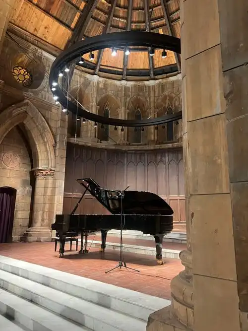

古典音乐欣赏
音乐介绍
古典音乐是人类文化宝库中的瑰宝，它承载着几百年来作曲家们的智慧和情感。从巴赫的严谨到莫扎特的优雅，从贝多芬的激情到肖邦的细腻，每一位大师都用音符书写着独特的故事。
我特别喜欢在安静的夜晚聆听古典音乐，那些优美的旋律能够让我的心灵得到放松和净化。无论是钢琴独奏、小提琴协奏曲，还是交响乐，都能带给我不同的感受和启发。
推荐曲目
巴赫 - 哥德堡变奏曲
这是巴赫晚期的杰作，以其精妙的结构和深刻的情感著称。每一个变奏都展现了不同的音乐性格，整体又保持着完美的统一。
莫扎特 - 第40号交响曲
这部作品充满了戏剧性和情感张力，是莫扎特最著名的交响曲之一。优美的旋律和精致的配器让人百听不厌。
贝多芬 - 月光奏鸣曲
这首钢琴奏鸣曲以其优美的旋律和深沉的情感而闻名。第一乐章如月光般宁静，第三乐章则充满激情和力量。
肖邦 - 夜曲集
肖邦的夜曲是钢琴音乐中的珍品，每一首都充满了诗意和浪漫情怀。细腻的情感表达和优美的旋律让人沉醉其中。
欣赏建议
- 选择安静的环境，让自己完全沉浸在音乐中
- 可以先了解作品的创作背景，有助于更好地理解音乐
- 不要急于求成，慢慢培养对古典音乐的感受力
- 可以从自己喜欢的乐器或作曲家开始探索
- 尝试在不同的时间和心情下聆听同一首作品，会有不同的感受